전날 술이고 음식이고 할 것 없이 한껏 먹부림을 부린 것치곤 둘 다 깔끔한 아침을 맞이했다. 무려 9시 반에 알람도 없이 자연스럽게 기상. 날씨는 여전히 해가 쨍쨍하고 맑았다.
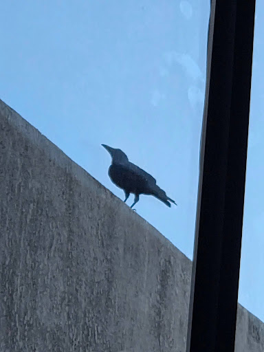
까마귀가 옆 건물 옥상에서 우리를 맞이했다. 어렸을 때만 해도 한국에서 까마귀를 본 일이 드물었던 것 같은데, 요즘은 까치와 비슷한 수준으로 흔해진 것 같다. 생태계에 변화가 생긴 걸까, 내가 뭔가 착각하고 있는 걸까.
어제 먹부림을 잔뜩 부린 여파가 남아 있었기에, 아침에도 우리는 둘 다 배가 차 있었다. 어제 먹다 남은 떡볶이가 테이블에서 우리를 반겼다. 어차피 배도 안 고프고, 시간은 많고 날씨는 좋으니, 우리는 커피로 하루를 시작하기로 했다. 짐을 조금 정리하고 프런트에 방 청소를 요청한 뒤, 예전에 H가 가 본 적이 있는 배양장이라는 카페로 갔다. 숙소에서 차로 30분 조금 넘게 걸리는 거리였다. 바닷가를 따라 굽이굽이 외진 곳으로 들어가는 동안 다른 차는 거의 보이지 않았다.
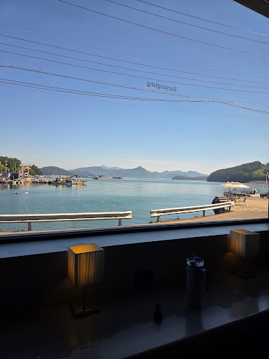
와 보니 배양장은 바닷가 바로 앞에 큰 창을 맞대고 있어서 뷰 하나는 예술이었다. 카페 면적도 아주 넓었는데, 점심시간이 되기 전이라 우리를 제외하면 손님 한두 팀이 전부였다. 워낙 시골이니 이렇게 크게 지어놨어도 땅값이나 건물 값은 많이 안 들었겠다 싶었다.
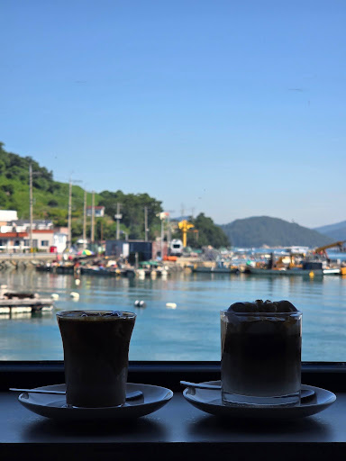
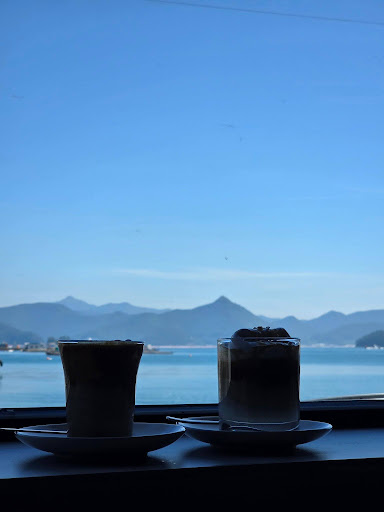
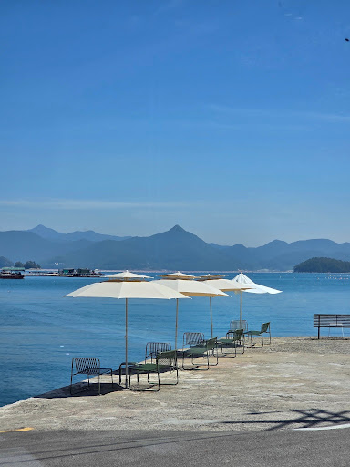
나는 플랫 화이트, H는 아몬드 크림 라떼를 시켰다. 날씨도 좋아서 사진이 어마어마하게 잘 나왔다. 밖에는 파라솔과 야외 테이블도 펼쳐져 있었는데, 조금 덜 더웠다면 밖에서 마셔도 괜찮았을 것이다. 우리 뒤로 어린 아이를 데리고 온 부부가 있었는데, 커피를 주문해 놓고 남는 시간에 아빠가 아이를 안고 저 파라솔 앞으로 나가 바다에 던질까 말까 춤을 췄다. 우리가 창밖으로 그 모습을 보면서 낄낄대는데, 아이 엄마로 보이는 여성분이 후다닥 달려나가서 아빠의 등짝을 때리고 아이를 받아 안았다. 아이는 꺄르륵대며 좋아했던 것 같다.
커피를 한 잔씩 하자 시간이 점심시간에 가까워졌고, 이른 식사를 마친 것으로 보이는 손님들이 점점 많이 들어오기 시작했다. 우리도 조금씩 배가 고파져서 커피를 다 마시고 점심을 먹으러 숙소 근처로 돌아왔다. 원래 찾아 놓은 집은 해물짬뽕 집이었는데, 유명한 곳인지 이미 웨이팅이 너무 길게 서 있어서 곧바로 포기했다. 그 대신 H가 예비로 찾아 둔 해물 뚝배기집을 선택했는데, 이게 이번 여행의 하이라이트였다.
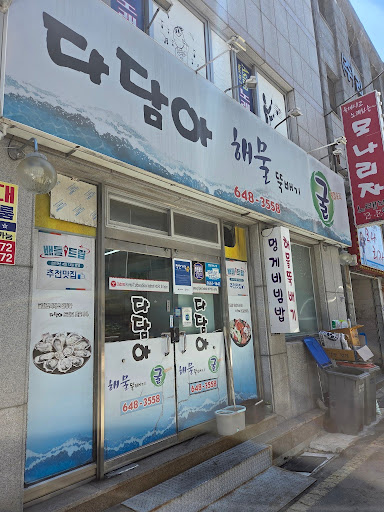
밖에서 보기엔 그냥 평범한 집 같았다. 안에는 손님이 많이 있었지만 기다리는 사람은 없었다.
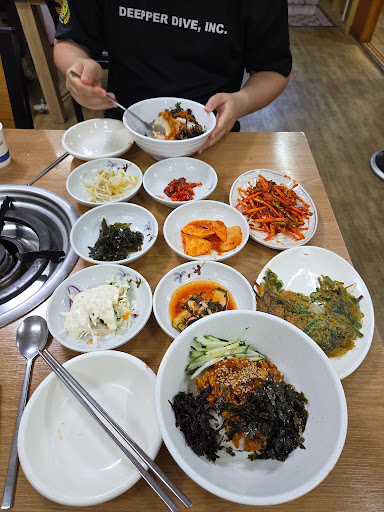
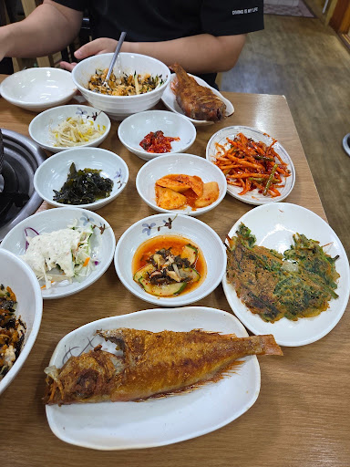
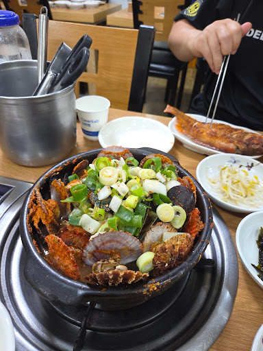
메뉴는 세트 A 혹은 B로 단출했는데, 우리는 A를 시켰다. 해물 뚝배기, 멍게 비빔밥, 바지락 무침, 생선구이 구성인데, 바지락 무침은 평범했지만 멍게비빔밥이 우리 생각보다 양이 많았고 멍게가 많이 들어 있었다. 그릇이 나오자마자 진한 멍게 향이 코를 찔렀다. 뒤이어 나온 생선구이는 통통했고, 메뉴당 하나가 아니라 한 사람당 하나였다. H는 생선구이를 별로 좋아하지 않아서 두 접시 다 내 앞으로 왔다. 열심히 살을 발라서 H에게 주긴 했지만 70% 정도는 내가 먹었을 것이다.
해물 뚝배기는 된장 베이스의 국물에 해물이 잔뜩 담겨서 나왔는데, 정말 있는 거 다 담은 것마냥 양이 많았다. 이미 앞서 나온 비빔밥과 생선구이만으로도 얼추 배가 차는데, 해물을 산처럼 담은 뚝배기가 이어서 나오니 정신이 아득해졌다. 가리비, 홍합, 바지락, 꽃게 등 구성도 알찼다. 우리는 정말 최선을 다해야만 했다. 기본 찬들을 최대한 피해가며 메인 요리에 집중했는데, 그럼에도 결국 완뚝에는 실패하고 말았다. 가격과 구성과 맛을 생각해 보면, 다찌는 다소 ’경험해 본다’에 의의를 두는 게 좋을 것 같고 진심으로 먹부림을 즐기기에는 이곳이 더 좋은 것 같다. 언젠가 꼭 다시 가보고 싶다. 점심 굶고 저녁에 술이랑 같이 먹을 것이다.
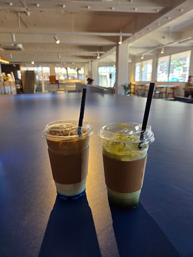
숙소로 돌아오는 길에 숙소 바로 옆 건물 1층에 있는 카페에서 식후 커피를 한 잔씩 샀다. 특이한 시럽을 쓴 강구안 커피? 가 있었는데, 딱히 특별한 맛은 아니었다.
우리는 술을 좋아하고, 특히 H가 맥주를 좋아하기 때문에 기회가 된다면 지방 브루어리를 가 보는 편이다. 이번에도 H는 숙소에서 멀지 않은 곳에 차려진 작은 브루어리를 찾아내서 낮술을 제안했다. 거리 자체는 걸어서도 충분히 갈 수 있을 만했는데, 문제는 이 때가 한낮이라 기온이 너무 높았고 하늘은 구름 한 점 없어서 직사광선이 사람을 익힐 기세로 내리꽂고 있었다. 술을 마실 예정이니 차를 끌 수는 없고, 그렇다고 무턱대고 걸었다간 일이 생길 것 같아서 우리는 택시를 선택했다. 차로는 10분도 안 걸리는 거리였다.
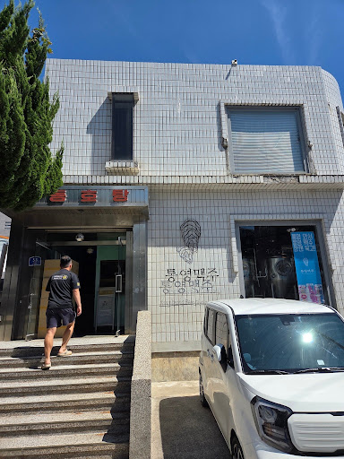
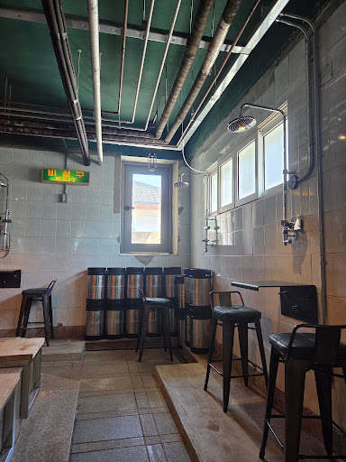
통영맥주라는 브루어리였는데, 특이한 점은 목욕탕 건물을 개조해서 사용하고 있다는 점이었다. 말이 개조지 사실상 인테리어나 아웃테리어를 거의 건드린 게 없어 보였다. 당장이라도 샤워기에서 물이 쏟아질 것만 같은 분위기였달까. 그래도 온도와 습도 관리는 잘 되는지 안이 습하거나 덥지는 않았다.
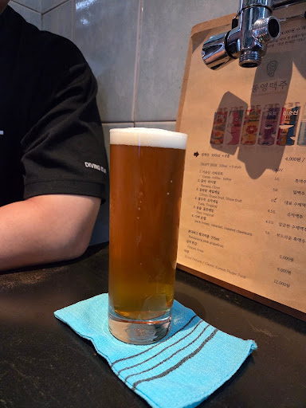
통영맥주 브루어리는 6종의 수제맥주를 팔고, 300 mL 잔에 서빙된다. 목욕탕을 개조한 브루어리라는 컨셉을 유지하기 위해서인지, 컵받침은 이태리 타올이다. H는 차가운 맥주가 미지근해지는 걸 싫어해서 500 mL, 1 L씩 나오는 것보다는 차라리 적은 용량으로 나오는 걸 좋아한다. 6종 중 4개? 5개? 정도를 마셨는데, 대체로 평범한 수준이었다. 한두 개 정도는 그래도 특색이 있었던 것 같고.
맥주를 다 마시고 나와도 여전히 해가 쨍쨍하니 더웠기 때문에, 우리는 다시 택시를 불러서 숙소로 돌아왔다. 토요일 오후 3시가 넘어서 우리가 같이 다니는 대전 요가원의 수강 신청 페이지가 열렸고, 우리는 수강권 사용 기한 만료가 임박했기 때문에 어떻게든 다 소모해 버리겠다는 의지로 돌아오는 주에 7번의 출석을 예약했다. 지금 와서 기억을 되돌려보면, 아마 한두 번은 취소하고 5-6번쯤 출석했을 것이다.
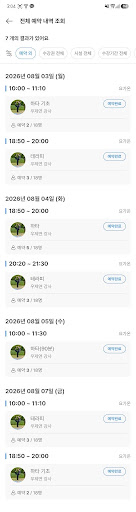
여행을 가면 항상 밥 시간이 빨리 돌아온다. 숙소에서 또 에어컨 틀어놓고 뒹굴거리다가 저녁 시간이 되었다. H는 저녁을 어디에서 먹어야 잘 먹었다고 동네방네 소문이 날지 고민하면서 열심히 인터넷을 뒤지더니, 중앙시장 안에 있는 해림횟집이라는 곳을 찾아냈다. 네이버 지도에는 리뷰가 하나도 없는데 카카오맵에만 좋은 리뷰가 있었다고 했다. 한여름이라 하모회가 제철인데, 나는 하모회를 먹어보기는커녕 하모가 뭔지도 몰랐기 때문에 하모회를 잘 하는 집을 찾아봤다고 한다. 이 때에는 다행히 하루 중 가장 더운 시간대가 지나가서, 숙소에서 횟집까지 걸어서 갈 수 있었다.
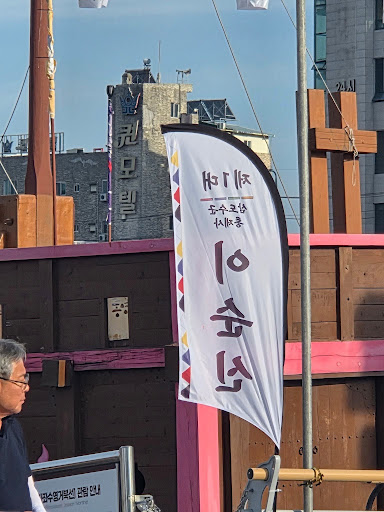
숙소에서 통영 중앙시장까지는 멀지 않지만, 사이 지형이 만이어서 바닷가를 조금 돌아가야 한다. 통영은 아무래도 조선 해군의 역사에 의미가 큰 곳이다 보니, 이렇게 육지 쪽으로 들어온 바다에는 거북선 모형이 항상 떠 있고 바닷가에는 역대 삼도수군통제사들의 이름이 적힌 깃발이 늘어서 있다. 그리고 제 1대 삼도수군통제사 기에는 우리 모두가 아는 자랑스러운 장군님의 함자가 당당히 박혀 있다.
거북선 모형 앞 육지에는 행사를 위한 야외 무대가 설치되어 있었다. 이 날에는 ’처랏’이라는 연희퍼포머그룹과 가수 안예은의 합동 공연이 예정되어 있었고, 마침 또 우리가 이곳을 지나칠 때 리허설이 진행되는 중이라 사람들이 많이 모여 있었다. 날이 조금만 덜 더웠으면 구경이라도 해 볼까 싶었는데, 한낮보다 조금 나아졌을 뿐 여전히 해가 쨍쨍했기 때문에 우리는 미련 없이 지나쳐 시장으로 향했다.
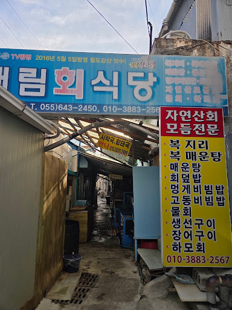
그렇게 도착한 해림횟집. 정말 시장 구석에, 알고 찾아오지 않으면 눈에 잘 보이지도 않는 위치에 식당이 차려져 있었다. 사장님은 연세가 많으신 할머니였는데, 건물에 가만히 기대서 멍하니 골목을 바라보고 계시다가 우리가 들어가니 얼른 맞이해 주셨다.
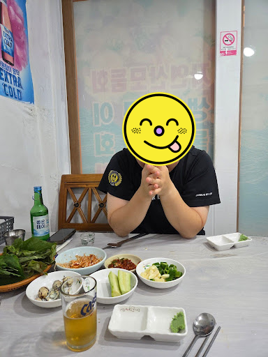
상술했듯이 이 날은 하모회를 먹는 게 목적이라 하모회 잘 하는 집으로 찾아간 거였는데, 우리가 들어가는 길목에 놓인 수족관들을 봤을 때에는 하모가 한 마리도 없었다. 그런데 사장님께 하모회를 주문했더니 아무렇지도 않게 주문을 받고는 기본 찬과 술을 내주시고 문 밖으로 사라지셔서 한참을 돌아오지 않았다. 우리 말고는 손님이 아무도 없었기 때문에 기본 찬에 술을 천천히 마시면서 기다렸는데, 나중에 알고 보니 다른 집에서 하모를 떼어다가 회를 쳐서 준비하시느라 시간이 오래 걸린 것이었다.
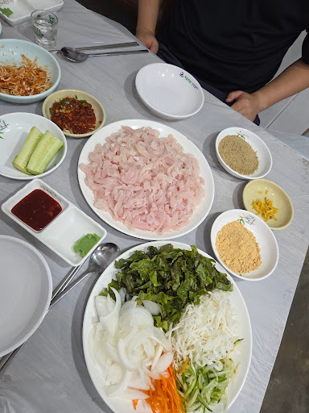
그렇게 나온 하모회. 분명 소짜를 시켰는데 양이 장난이 아니었다. 같이 먹을 야채도 한 사발이었다. 사장님은 콩가루, 들깨가루, 양념장과 야채와 하모회를 어떻게 섞어서 쌈을 싸야 맛있는지 알려주시고는 쿨하게 떠나셨다. 그리고 사장님의 가르침은 정확했다. 제철이라 더 그랬겠지만 아주 맛있었다. 회를 국수처럼 떠 먹어도, 야채를 한 사발 더 리필해서 다 먹어도, 세꼬시를 하도 씹어서 턱이 아파와도 양은 줄어들 기미가 보이지 않았다.
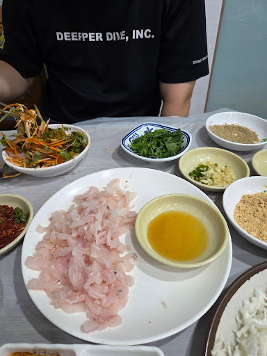
참기름은 원래 메뉴에 포함되어 있지 않지만, 맛잘알인 H가 사장님께 따로 요청드려서 한 종지 받았다. 참기름의 어시스트로 좀 더 힘내서 먹부림을 부렸지만, 그렇게 먹어도 저만큼이나 회가 남아 있었다. 소주는 진작에 다 먹었고, 단백질을 한없이 보충한다는 생각으로, 정신력으로 먹어 치웠다.
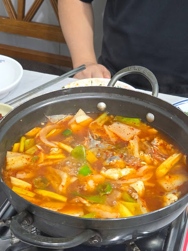
그렇게 회를 해치우고 한숨 돌리는데 그게 끝이 아니었다. 신기한 건, 여긴 매운탕도 일반적인 맛이 아니었다. 보통 횟집에서 후식으로 나오는 매운탕은 대체로 고춧가루 맛이 전부인데, 이 매운탕은 뭐가 들어갔는지는 몰라도 감칠맛이 깊게 났다. 회나 곁가지 음식들 없이 그냥 매운탕만 시켜서 밥이랑 같이 먹어도 훌륭한 한 끼가 되었을 듯한 느낌. 이 시점에는 정말 배가 많이 불러서 매운탕은 충분히 먹지 못하고 거의 국물만 떠 먹은 게 아쉬울 뿐이었다.
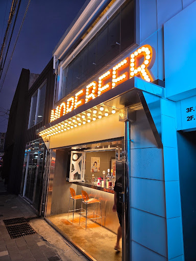
… 그렇게 먹고도 아쉬움이 남았는지 숙소 옆 모어비어라는 맥주집으로 왔다. 이 날은 몰랐는데, 이렇게 글로 정리하며 보니까 대체 저 시점에 어떻게 맥주를 마실 생각을 했는지 모르겠다. 분명 대단히 배불렀을 텐데, 우리는 어쩌면 우리가 생각하는 것보다 더 좋은 피지컬을 보유했는지도 모르겠다. 어떻게 온 컨텐츠가 먹고 마시는 것뿐인지. 뭐 그래도 즐거웠으니 됐다고 생각하지만.
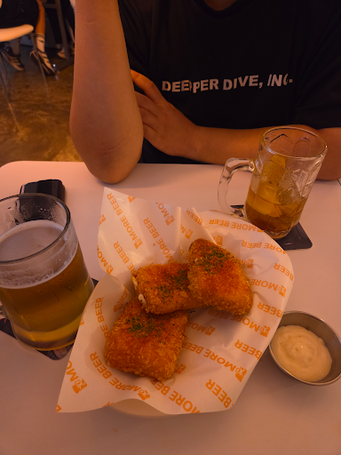
모어비어에서 나는 하이볼, H는 생맥주를 시켰다. 원래 안주는 안 시킬 생각이었는데, 메뉴를 구경하다 보니 칠리치즈스틱이 있었다. 우리는 요즘 스트리트 레스토랑 파이터라는 예능을 보는데, 거기에서 한 팀이 칠리 치즈스틱으로 판매 실적을 올리는 내용이 방송된 적이 있다. 우리는 얼핏 이해가 가지 않았다. 방송에 따르면 칠리 치즈스틱이 지금 유행하는 메뉴이고, 실제로 모어비어 메뉴판에도 유행이라고 적혀 있기는 했는데, 그냥 치즈스틱에 칠리 맛이 더해진 거면 뭐가 특별해서 갑자기 유행씩이나 하는 건지?
그래서 주문해 본 것이다. 원래는 다른 테이블에서 시키고 남기면 내가 얼굴에 철판을 깔고 가서 ’남기신 거라면 하나만 주세요’를 시전해 볼까 했지만, 차마 이 나이에 그 정도로 내려놓기가 쉽지 않았다. 결론적으로는, 칠리 치즈스틱의 맛은 정확히 우리가 예상한 대로였다. 이곳의 맛이 유행하는 맛과 얼마나 비슷한지는 잘 모르겠지만, 우리가 느끼기엔 이게 왜 유행인지 여전히 알 수 없다는 게 결론이었다.
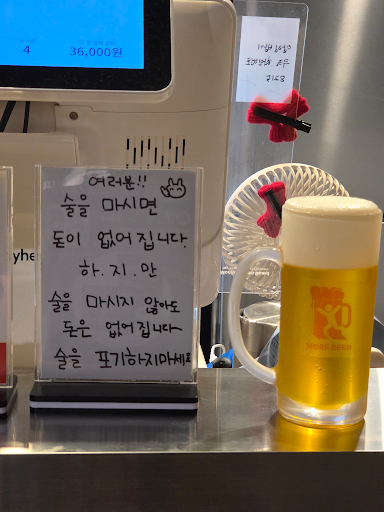
센스있는 모어비어 프런트의 문구.
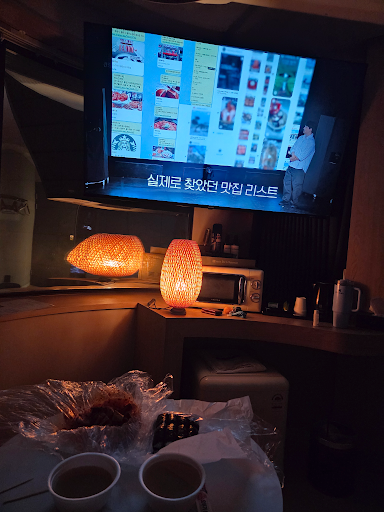
그렇게 나와서 숙소로 돌아와 ‘모태솔로지만 연애는 하고 싶어’ 시즌 2를 봤다. 사진에 나오듯, 우리는 오는 길에 또 충무김밥을 포장해 왔다. 스스로도 정말 대단하다고 생각한다. 그렇게 이 날도 배부른 채로 우리는 잠들었다.
마지막 날에는 적당히 일어나서 체크아웃을 하고 곧바로 차를 고속도로로 올렸다. 이 날은 내가 오후에 연구실에 가야 했기 때문에 애초부터 아무 일정도 계획하지 않았기 때문이다. 전날 밤늦게까지 충분히 많이 먹었기 때문에 둘 다 배는 전혀 고프지 않았고, 과음한 것도 아니어서 해장이 당장 필요하지도 않았다.
내가 운전하는 동안 H가 옆에서 점심 먹을 곳을 찾아보았다. 원래는 가는 길목에 적당히 휴게소에 들러서 먹을 계획이었는데, 이런저런 메뉴들을 보다 보니 또(…) 식욕이 동해 장수군 근처의 신흥반점이라는 중국집으로 경로를 급선회했다.
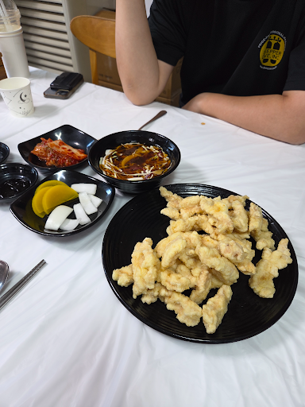
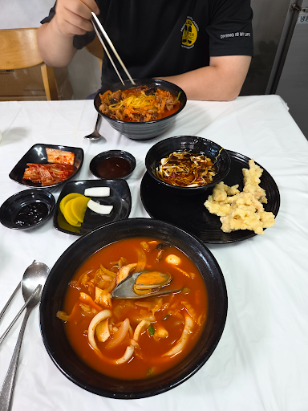
신흥반점은 외관은 평범해 보였고 입지도 고속도로 근처라 별로 안 좋다고 생각했는데, 사람이 꽉 차 있었다. 정말 운 좋게도 우리 바로 뒤에 온 팀부터 웨이팅이 걸렸다. 우리가 몰랐을 뿐 이미 소문난 맛집이었던 것 같다. 탕수육이 먼저 나오고 소고기짬뽕과 해물짬뽕이 뒤이어 나왔는데, 정말 맛있었다. 너무 맵지 않았고, 기름지지도 않았다. 아무런 기대 없이 들어간 집이었는데, 술술 잘 들어가는 아주 만족스러운 해장을 했다.
그렇게 마지막의 마지막까지 먹부림으로 꽉 채운 통영 여행이 끝나고 우리는 대전으로 돌아왔다. 즐거운 생일 여행이었다.